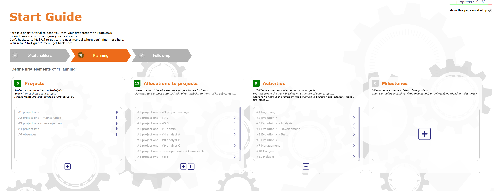

Fonctionnalités¶
Guide de démarrage¶
Page de démarrage pour les nouvelles installations pour aider l’administrateur dans les premières étapes de mise en place de l’application.

Guide de démarrage¶
Plusieurs étapes sont nécessaires pour configurer les bases et un affichage de progression vous permet de déterminer le pourcentage d’avancement dans l’installation. Vous pouvez masquer cette section au démarrage en décochant la case « afficher cette page au démarrage ».

progression de l’installation¶
Pour l’afficher à nouveau, sélectionnez-la comme page de démarrage dans l’écran paramètres utilisateurs ou dans le menu de session
Le guide est disponible à la prochaine connexion et peut également être trouvé dans le menu principal
Gestion de la planification¶
ProjeQtOr fournit tous les éléments nécessaires pour construire une planification à partir de la charge de travail, des contraintes entre les tâches et de la disponibilité des ressources.
Note
Accès multiple : Les utilisateurs peuvent modifier le même élément (s’ils en ont le droit) en même temps, sans se perturber, tant qu’ils ne modifient pas et n’enregistrent pas exactement le même champ au même moment.
Projet¶
Le projet est l’élément principal de ProjeQtOr. C’est un élément de planification.
C’est également le niveau le plus élevé de visibilité et de définition des droits d’accès basés sur les profils.
Vous pouvez définir des profils, certains ont une visibilité sur tous les projets, d’autres uniquement sur les projets auxquels ils sont affectés.
Vous pouvez également définir des sous-projets d’un projet et des sous-projets de sous-projets sans limite à cette organisation hiérarchique.
Cela permet par exemple de définir des projets qui ne sont pas de vrais projets, mais juste une définition de la structure pour votre organisation.
Voir aussi
Activité¶
Une activité est une tâche qui doit être planifiée ou qui inclut d’autres activités.
Il s’agit généralement d’une tâche ayant une certaine durée et devant être affectée à une ou plusieurs ressources.
Voir aussi
Vue planification Gantt. et Voir : Activité
Jalons¶
Un jalon est un événement ou une date clé du projet.
Les jalons sont couramment utilisés pour suivre les dates de livraison ou forcer une date de début d’activité.
Ils peuvent également être utilisés pour mettre en évidence la transition d’une phase à la suivante.
Contrairement aux activités, les jalons n’ont pas de durée et pas de travail.
Mais sur ProjeQtOr, vous pouvez spécifier des délais (positifs ou négatifs) à appliquer à vos jalons
Voir aussi
Ressources¶
Les ressources peuvent être affectées aux activités.
Cela signifie qu’un certain travail est défini sur cette activité pour la ressource.
Seules les ressources allouées au projet de l’activité peuvent être affectées à l’activité.
Voir aussi
Ressource
Saisie du travail réel¶
Les ressources saisissent leur temps passé sur l’écran de saisie du travail réel dans leur
Cela permet un suivi en temps réel du travail.
De plus, la mise à jour du reste à faire permet de recalculer la planification en tenant compte de la progression réelle sur chaque tâche.
Voir aussi
Planification¶
La planification est basée sur toutes les contraintes définies :
reste à faire sur chaque activité
disponibilité des ressources
taux d”allocation des ressources aux projets et Taux d’allocation
Taux d’affectation des ressources aux activités dans la section affectation.
Modes de planification pour chaque activité (dès que possible, durée fixe, …).
Dépendances entre activités.
Priorité de l’activité et Priorité de planification.
La planification est affichée sous forme de diagramme de Gantt.
Portefeuille de projets¶
La planification peut également être consultée sous forme de portefeuille de projets, qui est une vue de planification Gantt restreinte à une ligne par projet, plus des jalons optionnellement sélectionnés.
Planification globale¶
La Planification globale vous permet d’afficher bien plus d’éléments sur le diagramme de Gantt en plus des projets, activités et jalons habituels.
Dans cette vue de diagramme, vous pouvez voir les décisions, sessions de test, livraisons, risques, tickets ou opportunités…
Tous ces éléments peuvent être liés à une activité ou à tout autre élément du diagramme.
Planification des ressources¶
Vous pouvez afficher la planification pour chaque ressource, mais aussi par équipes, par réservoir de ressources ou vous pouvez afficher toutes les ressources quelles que soient leurs affectations.
Voir aussi
Éléments de planification - Diagramme de Gantt et Planification des Ressources
Gestion des ressources¶
ProjeQtOr gère la disponibilité des ressources pouvant être allouées à plusieurs projets. L’outil calcule une planification fiable, optimisée et réaliste.
Ressources¶
Une ressource peut être une personne travaillant sur les activités d’un ou plusieurs projets. Ou du matériel affecté à une tâche particulière.
Une ressource peut également être un groupe de personnes pour lesquelles vous ne souhaitez pas gérer les détails individuels. Voir : Équipes et Réservoir de ressources
Vous pouvez gérer cela via la capacité de la ressource, ETP, qui peut être supérieure à 1 (pour un groupe de personnes par exemple) ou inférieure à 1 (pour une personne travaillant à temps partiel).
Allocations¶
La première étape consiste à allouer chaque ressource aux projets sur lesquels elle doit travailler.
Spécifier le taux d’allocation (% du temps hebdomadaire maximum passé sur ce projet)
Ainsi que les périodes pendant lesquelles elle sera planifiée sur ces projets.
Affectations¶
Vous pouvez ensuite affecter des ressources aux activités du projet.
Vous renseignez la charge de travail que vous avez affectée à la ressource.
Seules les ressources allouées au projet de l’activité peuvent être affectées à l’activité.
Voir : Affectations
Calendriers¶
Pour gérer les jours ouvrés et non ouvrés, pour les ressources ayant des horaires réduits ou un rythme différent du calendrier français, pour les jours de congé ou les jours fériés, vous disposez de calendriers configurables.
Vous pouvez créer plusieurs calendriers pour gérer différents types de disponibilité.
vous pouvez créer un calendrier « 80% » avec chaque mercredi comme jour de fermeture, par exemple.
vous pouvez gérer des vacances séparées lorsque vous travaillez avec des équipes internationales.
Un calendrier est attribué à chaque ressource.
Voir aussi
Saisie du travail réel¶
Les ressources saisissent leur temps passé sur l”écran de feuille de temps. Cela permet un suivi en temps réel du travail.
Le recalcul de la planification tient compte du reste à faire et permet de prendre en compte la progression réelle sur chaque tâche.
Gestion des tickets¶
ProjeQtOr propose un environnement de ticketing.
Avec son suivi de bugs pour surveiller les incidents sur vos projets, vous avez la possibilité d’inclure du travail sur les tâches planifiées de vos projets.
Ticket¶
Un Ticket est une intervention qui n’a pas besoin d’être planifiée ou qui ne peut pas l’être.
Il s’agit généralement d’une tâche courte, dont la granularité, trop petite, ne peut pas correspondre à une activité et dont vous souhaitez suivre la progression pour décrire et fournir un résultat.
Par exemple, les corrections de bugs ou les problèmes peuvent être traités via des tickets. Vous ne pouvez pas planifier les bugs jusqu’à ce qu’ils soient identifiés et enregistrés, et vous devez être capable de fournir une solution à un bug (contournement ou solution de rechange).
La gestion des tickets vous permet de programmer des délais selon le type de ticket
Comme sur une activité, il est possible d’estimer la charge de travail.
Vous pouvez attribuer un coordinateur et/ou un manager.
Il est possible d”joindre des documents externes, de lier d’autres éléments, de laisser des notes…
Tickets simples¶
Les tickets simples sont juste des représentations simplifiées des Tickets pour les utilisateurs qui vont « créer » des tickets mais pas les « traiter ».
Les éléments créés en tant que tickets simples sont également visibles en tant que Tickets, et vice versa.
Voir aussi
Gestion des coûts¶
Les coûts peuvent être suivis sur les projets. Des ressources, activités, travaux affectés et autres dépenses de gestion, tous les coûts du projet sont suivis, consolidés et peuvent générer des factures.
Projets¶
Le Projet est l’entité principale de ProjeQtOr.
En plus du suivi du travail sur les projets, ProjeQtOr peut suivre les coûts associés à ce travail.
Activités¶
Une Activité est une tâche qui doit être planifiée ou qui inclut d’autres activités.
Le travail affecté aux ressources sur les activités est converti en coûts associés.
Coût des ressources¶
Pour calculer le coût des dépenses, ProjeQtOr définit le coût des Ressources.
Ce coût peut varier en fonction du rôle de la ressource et peut changer au fil du temps.
Voir aussi
Dépenses de projet¶
Les dépenses de projet peuvent également enregistrer des dépenses non liées aux coûts des ressources (achat, location, sous-traitance).
Voir aussi
Dépenses individuelles¶
Les dépenses individuelles peuvent enregistrer les dépenses générées par une ressource donnée.
Voir aussi
Devis, Commandes, Terme, Facture¶
ProjeQtOr peut gérer divers éléments financiers présents sur un projet :
Devis (propositions),
Commandes (reçues des clients),
Conditions de facturation,
Factures.
Voir aussi
Dépenses - Recettes - Factures client - Galerie financière
Gestion de la qualité¶
La spécificité de ProjeQtOr est qu’il est orienté Qualité : il intègre les meilleures pratiques qui peuvent vous aider à répondre aux exigences de qualité de vos projets.
Ainsi, l’étape d’approbation de vos Systèmes Qualité est facilitée, quelle que soit la référence (ISO, CMMI, …).
Workflows¶
Les workflows sont définis pour surveiller les changements de statut possibles.
Cela permet, entre autres, de restreindre certains profils du changement de certains statuts.
Vous pouvez, par exemple, limiter le changement à un statut de validation à un profil donné, pour vous assurer que seul un utilisateur autorisé effectuera cette validation.
Voir aussi
Délais pour les tickets¶
Vous pouvez définir des délais pour les tickets ou les types de tickets. Cela calculera automatiquement la date d’expiration du Ticket lors de sa création.
Le temps de prise en charge et de clôture du ticket peut être défini et calculé à des fins statistiques.
Voir aussi
Indicateurs¶
Les indicateurs peuvent être calculés par rapport au respect du travail prévu, de la date de fin ou des valeurs de coût.
Certains indicateurs sont configurés par défaut, et vous pouvez configurer les vôtres selon vos besoins.
Le non-respect des indicateurs (ou l’approche de la cible de non-respect) peut générer des Alertes.
Voir aussi
Listes de contrôle¶
Il est possible de définir des Listes de contrôle personnalisées qui permettront, par exemple, de s’assurer qu’un processus est appliqué.
Voir aussi
Rapports¶
De nombreux Rapports sont disponibles pour suivre l’activité sur les projets, certains affichés sous forme de graphiques.
Voir aussi
Tout est tracé¶
Toutes vos manipulations, modifications, enregistrements sont tracés. Rien n’est laissé au hasard.
Vous pouvez suivre, de manière centralisée et collaborative, tous les éléments créés : liste de questions et réponses, enregistrement des décisions affectant le projet, gestion de la configuration des documents, réunions de suivi…
De plus, toutes les mises à jour sont suivies sur chaque élément pour conserver (et afficher) un historique de la vie de l’élément.
Voir aussi
Contrôle et automatisation - Rapports - Flux d’activité - L’historique
Gestion des risques¶
ProjeQtOr inclut une gestion complète des risques et opportunités, comprenant le plan d’action nécessaire pour les atténuer ou les traiter et surveiller les problèmes survenant.
Risques¶
Un Risque est une menace ou un événement qui pourrait avoir un impact négatif sur le projet, qui peut être neutralisé, ou du moins minimisé, par des actions prédéfinies.
Le plan de gestion des risques est un point clé de la gestion de projet. Son objectif est de :
identifier les dangers et mesurer leur impact sur le projet et leur probabilité d’occurrence,
identifier les mesures d’évitement (contingence) et d’atténuation en cas de survenance (mitigation),
identifier les opportunités,
surveiller les actions de contingence et d’atténuation des risques,
identifier les risques qui finissent par se produire (ils deviennent alors des problèmes).
Opportunités¶
Une Opportunité peut être vue comme un risque positif. Ce n’est pas une menace mais une opportunité d’avoir un impact positif sur le projet.
Elles doivent être identifiées et suivies pour ne pas être manquées.
Problèmes¶
Un Problème est un risque qui survient pendant le projet.
Si le plan de gestion des risques a été correctement géré, le problème devrait être un risque identifié et qualifié.
Actions¶
Des actions doivent être définies pour éviter les risques, ne pas manquer les opportunités et résoudre les problèmes.
Il convient également de prévoir des actions d’atténuation pour les risques identifiés qui ne se sont pas encore produits.
Voir aussi
Gestion du périmètre¶
ProjeQtOr vous permet de surveiller et d’enregistrer tous les événements sur vos projets et vous aide dans la gestion des écarts, pour contrôler le périmètre des projets.
Réunions¶
Suivez et organisez les Réunions, suivez les plans d’action associés, les décisions et trouvez facilement ces informations par la suite.
Réunions périodiques¶
Vous pouvez également créer des Réunions périodiques, qui sont des réunions récurrentes régulières (comités de pilotage, réunions d’avancement hebdomadaires, …)
Décisions¶
Le suivi des Décisions vous permet de retrouver facilement les informations sur l’origine d’une décision :
qui a pris une décision particulière ?
quand ?
lors de quelle réunion ?
qui était présent à cette réunion ?
Pas révolutionnaire, cette fonctionnalité peut vous faire gagner de nombreuses heures de recherche en cas de litige.
Questions¶
Suivi des Questions.
Les réponses peuvent également simplifier votre vie sur de tels échanges, qui finissent souvent en jeu de Ping.
Pong avec une pauvre feuille Excel dans le rôle de la balle (quand ce n’est pas un simple échange d’e-mails…).
Produit et Version¶
ProjeQtOr inclut la gestion des Produits et des Versions de produits.
Chaque version peut être connectée à un ou plusieurs projets.
Cela vous permet de lier vos activités à la version cible.
Cela permet également de savoir, dans le cas du suivi de bugs, la version sur laquelle un problème est identifié et la version sur laquelle il est (ou sera) corrigé.
Voir aussi
concept - common-sections - type-restriction-section - Pilotage
Gestion des documents¶
ProjeQtOr propose une Gestion documentaire intégrée.
Cet outil est simple et efficace pour gérer vos documents de projet et de produit.
ProjeQtOr supporte uniquement les documents numériques.
Un document sera stocké dans l’outil sous forme de versions.
Un document peut être versionné et un processus d’approbation peut être défini.
Définissez une structure pour le stockage des documents. La structure des répertoires est définie dans l’écran des répertoires de documents.
La définition globale des répertoires est directement affichée dans le menu des documents, pour donner un accès direct aux documents selon la structure définie.
Voir aussi
Documents - Répertoire et Documents - Répertoire de documents
Gestion des engagements¶
ProjeQtOr vous permet de suivre les exigences de vos projets et de mesurer à tout moment la progression de la couverture, facilitant ainsi l’atteinte de vos engagements.
En plus des fonctionnalités standard pour gérer vos projets et surveiller les coûts et les délais, ProjeQtOr fournit des éléments pour surveiller les engagements sur les produits.
En reliant ces trois éléments, vous pouvez obtenir une matrice de couverture des exigences, simplement, efficacement et en temps réel.
Exigences¶
La gestion des exigences aide à décrire les exigences explicitement et à surveiller quantitativement la progression dans la construction d’un produit.
Cas de test¶
La définition des Cas de test sert à décrire comment vous testerez qu’une exigence donnée est satisfaite.
Sessions de test¶
Les Sessions de test regroupent les cas de test à exécuter dans un but particulier.
Voir aussi
Gestion des actifs¶
ProjeQtOr inclut la gestion des actifs informatiques. Le parc est composé d’équipements et chacun de ces équipements peut contenir d’autres équipements et aura un type d’équipement.
Licences¶
Le concept de licence sera géré sous forme d’équipement, en définissant des équipements de type licence, qui sont liés à des équipements de type logiciel.
Cette méthode permet de définir un stock de licences achetées et de les attribuer progressivement aux équipements sur lesquels elles sont installées.
Équipements¶
Cette fonctionnalité vous permet de gérer les types d’équipements, catégories, marques et modèles d’équipements.
Mais aussi les fournisseurs et les emplacements de cet équipement.
Voir aussi
Ressources Humaines¶
Cette section permet de gérer les Ressources Humaines de la société. Ce système vient en complément des standards de la gestion des absences
Vous pouvez définir les employés, les types de contrats, le contrat pour les employés
Vous pouvez choisir le standard de droit aux congés pour chaque type de contrat
L’employé peut réserver des périodes d’absence selon ses droits.
Le système inclut également un processus de validation des demandes pendant la période de congé.
Sections Ressources Humaines
Calendrier des congés
Période de congés
Droits aux congés acquis
Employés
Contrat de travail
Gestionnaires des employés
Tableau de bord des congés
Paramètres des congés réglementés
Capacité variable¶
Les ressources peuvent avoir une capacité qui varie au fil du temps.
Cela vous permet de réserver et de saisir du temps supplémentaire (pour les périodes d’heures supplémentaires)
ou inférieur à la capacité standard (pour certaines périodes de repos)
Voir aussi
Outils¶
ProjeQtOr inclut des outils pour générer des alertes, envoyer automatiquement des e-mails sur des événements choisis, importer ou exporter des données dans divers formats.
ProjeQtOr inclut une fonctionnalité d’importation pour presque tous les éléments de gestion de projet, à partir de fichiers CSV ou XLSX.
Toutes les listes d’éléments peuvent être imprimées et exportées au format CSV et PDF.
Les détails de chaque élément peuvent être imprimés ou exportés au format PDF.
La planification Gantt peut être exportée au format MS-Project (XML).
Des alertes internes peuvent être générées automatiquement sur la base d’événements définis.
Ces alertes peuvent également être envoyées sous forme d’e-mails.
Il est également possible d’envoyer manuellement des e-mails depuis l’application, en joignant les détails d’un élément.
Il est également possible de récupérer les réponses à ce type d’e-mail pour enregistrer le message dans les notes de l’élément concerné.
ProjeQtOr fournit des fonctionnalités administratives pour gérer les connexions, envoyer des alertes spéciales et gérer les traitements de tâches en arrière-plan.
De plus, l’outil dispose de son propre système CRON, indépendant du système d’exploitation et capable de gérer l’arrêt et le redémarrage de PHP.
Voir aussi